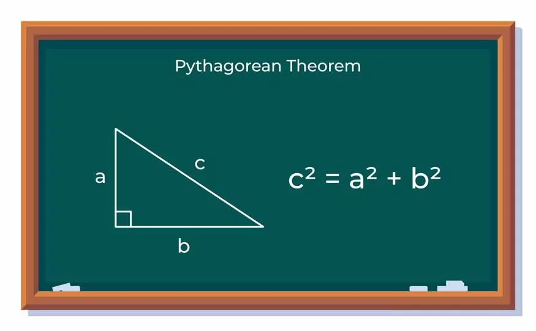

Легенда про питання номер 6
09/09/2024 23:25
1988 року у Канберрі відбулася міжнародна математична олімпіада. Одне питання з неї стало на той час легендарним через його складність.
1988 року з ФРН (східної частини Німеччини), до професорів, що відбирали завдання на олімпіаду,
прийшла задача, що поставила їх у глухий кут. Зазвичай, завдання, що приходять на відбір є залегкими, тому вони не потрапляють
до списку завдань, але цього разу все було по-іншому.
Умова задачі полягає в наступному: дано 2 натуральні числа a та b. Ми дивимось на результат дробу a²+b²⁄ab+1,
і якщо він не є цілим, то ми не звертаємо на нього увагу і йдемо далі. Але якщо результат цілий, то він обов'язково має бути квадратом натурального числа.
Умова побудована доволі просто, але навіть найрозумнішим математикам того часу не вдалось швидко зрозуміти, в чому полягає рішення.
Професори не змогли розв'язати задачу за 6! годин. В цілому, на олімпіаді дається 4,5 години, щоб розв'язати 3 завдання.
Професори не побоялися кинути виклик молодим талантам, незважаючи на той факт, що в учнів було в середньому 1,5 години на її вирішення.
Беручи до уваги, що лише 11 учасників з 268 розв'язали задачу, її складність назавжди увійшла до олімпіадної історії.
Автор: Олександр Дубчак
← Повернутися до новинІнші популярні новини:
Виникнення найвідомішої теореми у світі - теореми Піфагора
10/09/2024 00:57